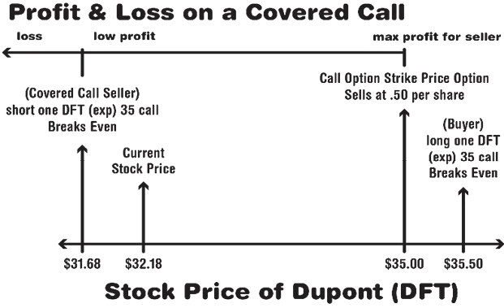
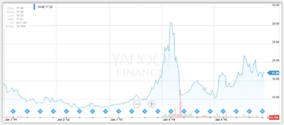
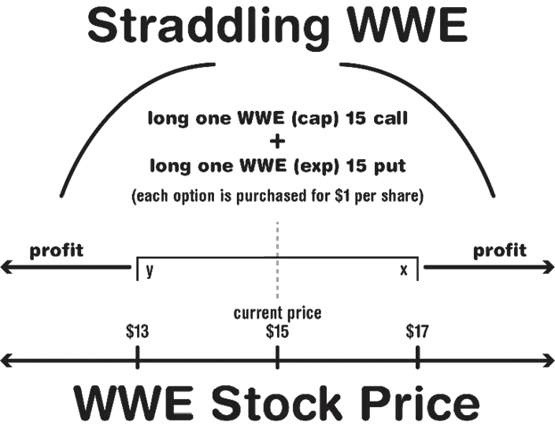
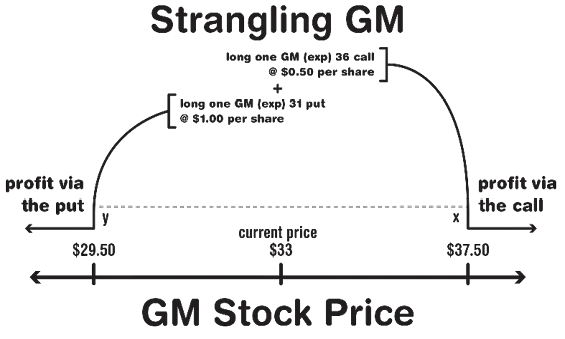
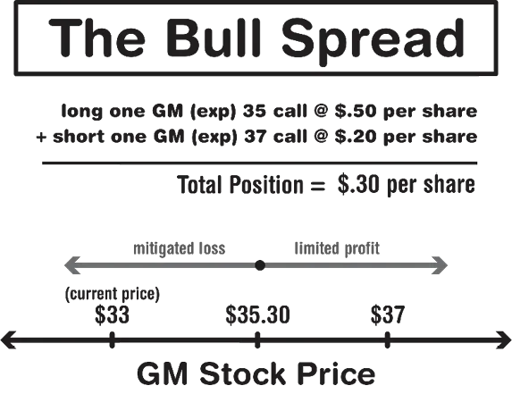
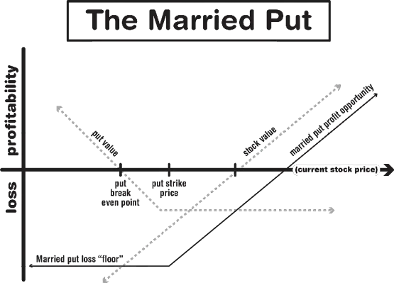
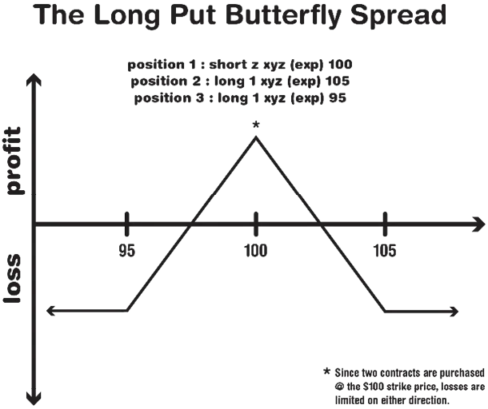

As stated previously, you’re not going to automatically profit on an option
just because your option is ITM. You also have to account for the amount
you paid to own the option. Traders use a concept called a “breakeven
point” to help them clarify when they’re actually holding a profitable
option.
For calls, your breakeven point can be calculated simply by adding your
strike price to the premium you paid to own the option. If I own a $49 call
option on a stock worth $50 (already ITM), and I paid $2 a share to own
this option, then my breakeven point is equal to $49+$2 or $51. Once the
stock rises above $51, then and only then is my option truly profitable.
Here’s an example of how utilizing the breakeven point is helpful when
assessing and monitoring options strategy:
Chapter 3 discussed selling the covered call option, whereby an option is
sold on a stock you own, one that you’re comfortable selling at a certain
price. You used DuPont, which was trading at $32.18, and you sold a
covered call option with a strike price of $35. You sold the option for about
$.50 per share. Using this strategy, in order for the party who bought your
option to reach his breakeven point, the price of DuPont would have to
climb to at least $35.50 before the expiration period. Now, from the
perspective of your position, and, assuming that you’re truly committed to
unloading all of your DuPont stock, there is another breakeven point that
you need to keep in mind. You collected $50 (.50 x 100) from the sale of
the $35 call option, and, as the owner of 100 shares of DuPont, you’re
losing $50 every time the stock declines by $.50. Therefore, as the
writer/seller of the covered call, your breakeven point is the price you paid
for the stock, $32.18, minus the per-share price of the call option ($.50)—
$31.68. In other words, even if you pad your coffers by selling the call
option, your DuPont play is still going to lose money if you end up getting
out at $31.68 or lower
The straddle tactic is both easy to understand and potentially useful for investors who believe that they can spot interesting trends in the market. In Chapter 4, we took a look at the WWE stock when trying to assess implied volatility and its effect on the pricing of options. Every late March or early April, the WWE brings its signature product, “Wrestlemania”, to the market. There’s always a whole lot of talk about whether the current year’s Wrestlemania is going to be a successful event, and in the aftermath of the spectacle major changes are revealed that affect the direction of the company, most notably, who is going to be the WWE’s new champion, as well as who’s going to be retiring or who’s going to be coming back or stepping up to a bigger role. If you look at the WWE’s stock performance chart over the last five years (Fg. 29), you’ll notice that there are some significant fluctuations in the stock’s price occurring between the months of March and May. For the sake of argument, let’s say that you can’t pinpoint whether or not Wrestlemania leads to the plummeting of the stock’s value or raises it, but you’re quite certain that it changes it in some particular way, and dramatically.

In this event, you might consider using a straddle strategy. In a straddle, a put and a call option are purchased for the same stock at the same strike price. Let’s say that next February the WWE stock is trading at around $15 per share. You decide to straddle the stock by purchasing an ATM call and an ATM put option. Each option costs you a dollar per share to purchase, so you’ve technically invested $200 if you’re buying standard 100 share put and call contracts.

You know that Wrestlemania is on April third this year, so you select the third Friday in April for your expiration date. Now, in order for you to make money on your straddle, the WWE stock needs to be either above $17 ($2 above $15) or below $13 ($2 below $15) by the end of the contract. Hence, breakeven points on the straddle strategy are expressed as two limits: above x or below y or beyond the range of x to y. In straddle plays, you need higher implied volatility to have a good chance to pass the breakeven point, but, unfortunately, as always, options with higher implied volatility are likely to prove to be expensive. Furthermore, whenever a company is about to release big news or put a significant product on the market for the first time, the price of all options associated with that stock are inclined to spike somewhat in anticipation of some major movement.

The strangle strategy is like the straddle except the call and the put are set to different prices, usually with the put strike price being lower. Investors generally turn to the strangle when they’d rather pay a little bit less in premiums while betting that the stock will move well past the breakeven point for either option. For example, General Motors is trading at $33. You decide to pursue a strangle strategy by purchasing a cheap OTM call option with a strike price of $36. The call costs you 50 cents per share in premiums. You concurrently purchase a cheap put option with a strike price of $31, and you pay $1 per share. Your total (combined) premium payment is $1.50. Therefore, in order to break even on the strangle, you need General Motors to rise above $37.50 ($36 + $1.50) or drop below $29.50 ($31-$1.50). Just as with your straddle strategy, the strangle strategy should be driven on the assumption that a stock is going to change in price, either up or down (you’re not sure which). A strangle will give you more options than a straddle and will also give the investor a chance to enter into a market position for potentially less money

The vertical spread refers to the simultaneous purchase and sale of calls or puts on the same stock at different strike prices. As with the previous two strategies, the purpose of the spread is to provide the investor with flexibility of positioning. Let’s reuse the General Motors example, assuming the stock is still trading at about $33. If you decide to buy a call on GM with a strike price of $35 and sell a call with a strike price of $37, you’re still going to end up paying an overall net premium, as the $35 call option that you bought is more expensive than the $37 option that you sold. For the purpose of this illustration, let’s assume that you paid $.50 to buy your $35 call and that you sold your $37 call for $.20. Therefore, your total premium payment to establish your current position is $.30.
In order for your spread to pass the breakeven point, the stock must rise higher than $35.30 ($35 + .30). If the stock ends up at any point between $35.30 and $37 (within the spread), then the $37 call will not be exercised and you’ll take a profit. Should the stock soar above $37 and you’re forced to oblige the call you sold, then your profit will cap out at $1.70 ($37-$35.30) regardless of how much higher the stock surges above $37. In other words, even if the stock soars to $40 or higher, for all intents and purposes, in your universe, the stock ended up at $37, as you are preobliged to sell the stock at this price.
The moral of the story on spreads is that they allow you to cut down on the expense of your premiums, but they limit, to an extent, your capacity for profit. Spreads are very popular among professional investors who would gladly trade away a shot-in-the-dark chance at seeing an enormous profit if it means cutting down on their risk.

The trade illustrated in Fg. 32 in which two calls are concurrently bought
and sold at different strike prices is known as a bull spread, as the investor
needs the stock to behave bullishly (go up) in order to see a profit.
A bear spread can be executed by simultaneously purchasing and selling
put options on the same stock at different strike prices. Just like in the bull
spread, you’re trading limited profitability for a less expensive premium.
Here’s a list of several other strategies for your consideration. Your
broker can enlighten you as to whether or not they’d work for you and, of
course, you can virtually practice them until you’re comfortable with
attempting them for real.
The cash-secured put is used by investors who are looking to acquire ownership of a stock, but want to get in with minimal expenditure. To accomplish this, the investor writes a put option that’s slightly OTM. If the stock doesn’t go down in price and the put option is not assigned, then the investor pockets the premium and may write/sell another put option. When the stock waxes bearish, the investor purchases the underlying stock near the strike price and hopes that the stock turns quickly bullish before his new acquisition is assigned via the put option. The main idea of the cash-secured put is to use premium revenues from the sale of the put option to mitigate the cost of acquiring the sought-after stock.
A married put weds long stock with a long put to provide protection for the investor. For this strategy, you purchase the stock and the put at the same time. This strategy functions like an insurance policy and provides a “floor” should the asset’s price plunge suddenly and drastically. Experts say the married put provides the investor with limited risk and unlimited reward. As with many strategies, timing is key, but with the married put you can protect yourself against potential short-term losses.

The protective collar strategy occurs when an investor purchases an out-ofthe-money (OTM) put option and writes an OTM call option at the same time for the same underlying asset (i.e. shares of stock). This strategy works best after a long position in a stock has produced significant gains and is the perfect way to lock in profit without selling your shares. Try to purchase the stock and the put during low-volatility conditions for the best outcome. This allows you to buy longer-term protection.
According to Dr. Joe Duarte,cite the Butterfly Spread combines the aforementioned bull put spread and bear put spread expiring the same month for a debit. The image of the butterfly is used because the two short puts possess the same strike price and are said to make up the body of the butterfly. Conversely, the two long puts include different strike prices (above and below the proverbial “body”) and they are said to be the wings. This strategy provides limited risk with limited reward and can get expensive due to the trading costs associated with the three positions involved. However, it’s an interesting strategy and one that’s good to try on paper as you practice your options trading.

While we’re discussing winged creatures…the Iron Condor involves an investor holding both a long and a short position in two different strangle scenarios. This is a fairly complex strategy that is not meant for the beginner as it takes time to master. However, once you’re ready to exceed the safe havens of covered calls and other beginner strategies, and if you’re someone who really enjoys “having some skin in the game”, you’ll love the excitement of the Iron Condor. When you’re ready, ask your broker about it and, again, practice it on paper until you feel confident about the particulars.
Remember, NO strategy is risk free. All carry different degrees of reward and risk, and you need to decide – as you progress – whether you wish to continue to play it safe or if you’re willing (and can afford) to be a little more aggressive in your investments. A broker who has your best interests in mind should be able to lead you in the right direction in regards to testing different strategies. If you trust him – and you should only maintain a broker you trust – go with his advice.
The term “rolling” refers to one of the most common ways to adjust an option’s position. You can roll either a long or a short option position, but in order to stay in tune with the beginner-level knowledge in this book, we’ll focus on rolling the short position.
Understand, first of all, that with rolling, there are no guarantees. As with
everything you do in the options market, you are “speculating” and hoping
that the moves you make result in a profit rather than a loss. Whenever you
roll a short position, you’re buying back an option you initially sold--
thereby closing that position--and writing/selling a new option on the same
stock but with a different strike price, thereby opening a new position.
Let’s take a look at three of the more basic types of rolling positions:
When you choose to roll a covered call, you go in the “up and out” direction. You’re looking to go “up” in strike price and to go “out” in time. This way you balance the decrease in premium you’d encounter for selling a higher OTM strike price in contrast to the greater premium you’d receive for selling an option that is further from its expiration date. Here’s an example:
Suppose you select a buy-to-close order for the front-month 80-strike call. At the exact same time, you sell to open an out-of-the-money 85-strike call (this is “rolling up”) that expires in 60 days (this is referred to as “rolling out”). Due to higher time value, the back-month 85-strike call is trading for $2.50. So, you pay $2.30 to buy back the front-month call and receive $2.50 for the back-month call. Hence, you do this trade for a net credit of $0.20 ($2.50 sale price - $2.30 purchase price) or a total of $20.
There are positives and negatives here and maybe some things that make you a bit nervous. On one hand, since you raised the strike price of the option to $85, you can potentially make more profit on the stock since the obligation was originally at $80. You had to buy back the first-month call for more money than you received when selling it, BUT you covered that cost by selling the back-month strike call for more premium.
The risk is present because there are two months left before the expiration date of the new options, and you have no idea what might happen with the price of the stock during that period of time. It may proceed in your favor…but you might see a loss as well. Remember, there’s time for the market to move in a direction that won’t be to your advantage. You have to decide whether or not it’s worth taking that chance.
In this scenario, you want to roll “down and out” in order to avoid assignment. This is converse to the “up and out” direction you want to go when rolling the covered call. Here’s an example:
You’re going to sell a 30-day cash-secured put on your favorite stock, Melody Musical Instruments. It has a strike price of $50. When the stock was trading at $52, you received a premium of $.80 per share for selling the put option. However, the stock is now trading at only $49.50, and it’s getting close to the expiration date. You’re worried. So, you need to be sure to avoid assignment by buying back that front-month 50-strike put and, therefore, cancel your obligation. However, that front-month put you sold way back when for $.80 is now selling for $1.45.
So, what can you do to accomplish the roll? You need to enter a buy-toclose order for the front-month 50-strike put. In the same trade, you need to sell to open a back-month 48.50-strike put (this is the rolling down part), 90 days from expiration (rolling out) which is trading for $1.70. By doing this, you receive a net credit of $0.25 ($1.70-$1.45) or a total of $25.
The increase in time value of the 90-day option therefore allows you to roll for a net credit of $25 even though the back-month put is further out-ofthe-money. The caveat? Whenever you do a down and out roll, you might take a loss on the front-month put. In addition, you’re not sure in what direction the market will move in the months before the expiration, so you really haven’t secured any gains on the back-month put, which exposes you to further risk. Hence, you should always do a down and out roll for the shortest possible time period.
Similar to rolling individual options, you can roll a spread by moving strike prices up or down and moving out in time. However, with a spread, there are generally four options to be traded during the process (closing two and opening two) instead of just two. This, in itself, makes it a little more complicated right off the bat.
Remember that favorite stock... Melody Musical Instruments? Well, now it’s trading at $53 and you’re in a bearish position. Your broker advises you to sell a 55/60 short call spread 30 days from expiration time. As such, let’s say you’re going to receive a net credit of $1.00. But now the stock is heading upwards and is selling at $55.50. There are only 15 days left until the expiration date and, sadly, the cost to buy back the spread has risen to $1.70.
You think that this is just a fluke, and your research shows that this stock
is going to go back down. So, you decide to roll up and out. That means
you’re rolling up in strike price and out in expiration time.
So, you buy back the 55/60 short call spread for $1.70 and, at the same
exact time, sell another short call spread that has a short strike of 60, a long
strike of 65, and is 45 days from expiration. As a result, you receive a credit
of $1.10. You wind up with a net debit of -$.60. However, if the stock is
below $60 by the time you reach the new expiration date, you’ll be back in
the money to the tune of $.40. (That’s the $1.00 net credit to open the 55/60
spread minus the $1.70 net credit to close it, plus the $1.10 net credit to
open the new 60/65 spread.)
Sound complicated? It is! And, remember, your forecasts about the
direction of the stock prices need to be on-the-mark if you’re going to
navigate this roll successfully. You should definitely ditch instead of roll if
you’re not confident in your predictions.